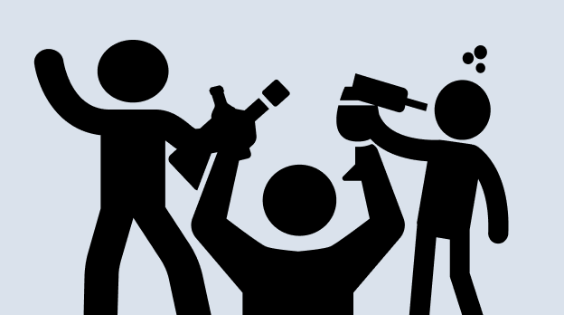
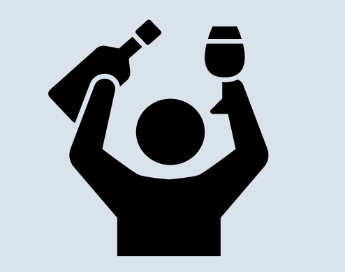
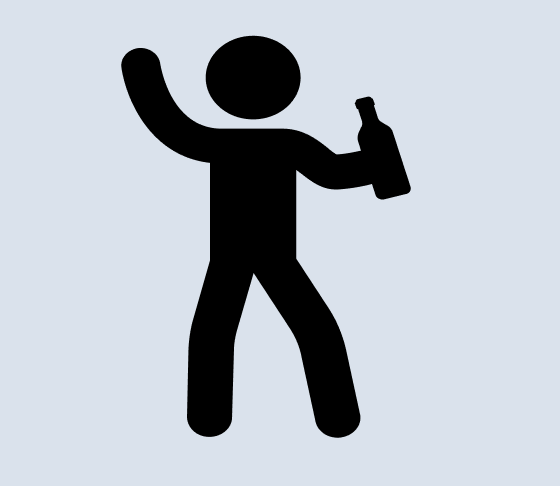
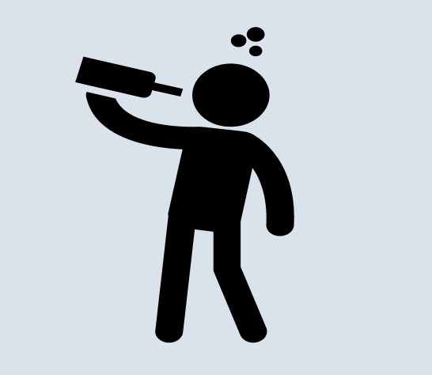

Wie zijn wij
Onze missie en vissie
Interactief Luisteraars spelen een actieve rol door hun verhalen, vragen en dilemma’s in te sturen. Deze behandelen we in de podcast, waardoor elke aflevering persoonlijk en uniek is. Zo sluiten we aan bij wat onze luisteraars écht willen horen.
Vriendelijk De sfeer is gezellig en informeel, net zoals een avondje borrelen met goede vrienden. Iedereen voelt zich welkom en herkent zichzelf in de gesprekken. Het is de perfecte mix van ontspanning, humor en verbinding.
Authentiek Geen scripts, geen verfraaiing, alles wordt besproken zoals het is. Jullie gaan de diepte in, maar schuwen ongemakkelijke of rauwe momenten niet. Authenticiteit staat centraal, met een flinke dosis eerlijkheid en spontaniteit.
Zoe
Mijn naam is Zoe Ros ik ben 23 jaar en dit is mijn eerste jaar op CMD op de hoge school van Amsterdam.
Ik ben vaak met collega's op de zuidas wat drinken samen of met vriedinnen in het wekend. Na een harde dag werken vinden we het heerlijk om samen met ze alle wat te gaan drinken en vertelen wat voor deals we hebben gemaakt. Ook dagen we elkaar uit en lachen we om elkaar. In het weekend doe ik aan spelletjes avond en komen er verschillende mensen langs. Onze grooste ergenis is vaak dat we het heerlijk vinden om te gaan drinken maar bang zijn dat we er van aankomen. Dus daarom hebben we vaak gezond eten bij de wijn in plaats van pizza.
Mees
Ik ben Mees en ik ben 18 jaar
Ik studeer aan de Hogeschool van Amsterdam en ik ga graag uit met mijn vrienden, het liefst minimaal 1 keer per week, en heb dus genoeg verhalen over gekke gebeurtenissen die ik met het stappen heb beleefd. Mijn go-to drankje is een heerlijk Texels biertje.
Jarno
Hoi, ik ben Jarno en ik ben 22 jaar
En mijn go to drankje is Wodka-Redbull. Ik ga regelmatig te stappen met vrienden of we zitten gezellig met ze alle bij iemand, ook hou ik van erg van sporten en ben ik veel bezig met mijn gezondheid. Ik heb dus genoeg leuke en grappige verhalen e vertellen over mijn ervaringen met drank!